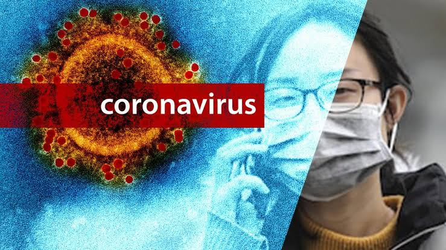

SYMTOMS:-
COVID-19 affects different people in different ways. Most infected people will develop mild to moderate illness and recover without hospitalization.
Most common symptoms:
fever
dry cough
tiredness
Less common symptoms:
aches and pains
sore throat
diarrhoea
conjunctivitis
headache
loss of taste or smell
Serious symptoms:
1.difficulty breathing or shortness of breath
2.chest pain or pressuredifficulty breathing or shortness of breath
3.loss of speech or movementdifficulty breathing or shortness of breath
Seek immediate medical attention if you have serious symptoms. Always call before visiting your doctor or health facility.
On average it takes 5–6 days from when someone is infected with the virus for symptoms to show, however it can take up to 14 days.
PREVENTION:-
To Prevent The Spread Of COVID-19:
*Clean your hands often. Use soap and water, or an alcohol-based hand rub.
*Maintain a safe distance from anyone who is coughing or sneezing.
*Wear a mask when physical distancing is not possible.
*Don’t touch your eyes, nose or mouth.
*Cover your nose and mouth with your bent elbow or a tissue when you cough or sneeze.
*Stay home if you feel unwell.
*If you have a fever, cough and difficulty breathing, seek medical attention.
Calling in advance allows your healthcare provider to quickly direct you to the right health facility. This protects you, and prevents the spread of viruses and other infections.
Masks
Masks can help prevent the spread of the virus from the person wearing the mask to others. Masks alone do not protect against COVID-19, and should be combined with physical distancing and hand hygiene. Follow the advice provided by your local health authority.
TREATENTS:-
Self-Care
If you feel sick you should rest, drink plenty of fluid, and eat nutritious food. Stay in a separate room from other family members, and use a dedicated bathroom if possible. Clean and disinfect frequently touched surfaces.
Everyone should keep a healthy lifestyle at home. Maintain a healthy diet, sleep, stay active, and make social contact with loved ones through the phone or internet. Children need extra love and attention from adults during difficult times. Keep to regular routines and schedules as much as possible.
It is normal to feel sad, stressed, or confused during a crisis. Talking to people you trust, such as friends and family, can help. If you feel overwhelmed, talk to a health worker or counsellor.
Medical treatments
If you have mild symptoms and are otherwise healthy, self-isolate and contact your medical provider or a COVID-19 information line for advice.
Seek medical care if you have a fever, a cough, and difficulty breathing. Call in advance.